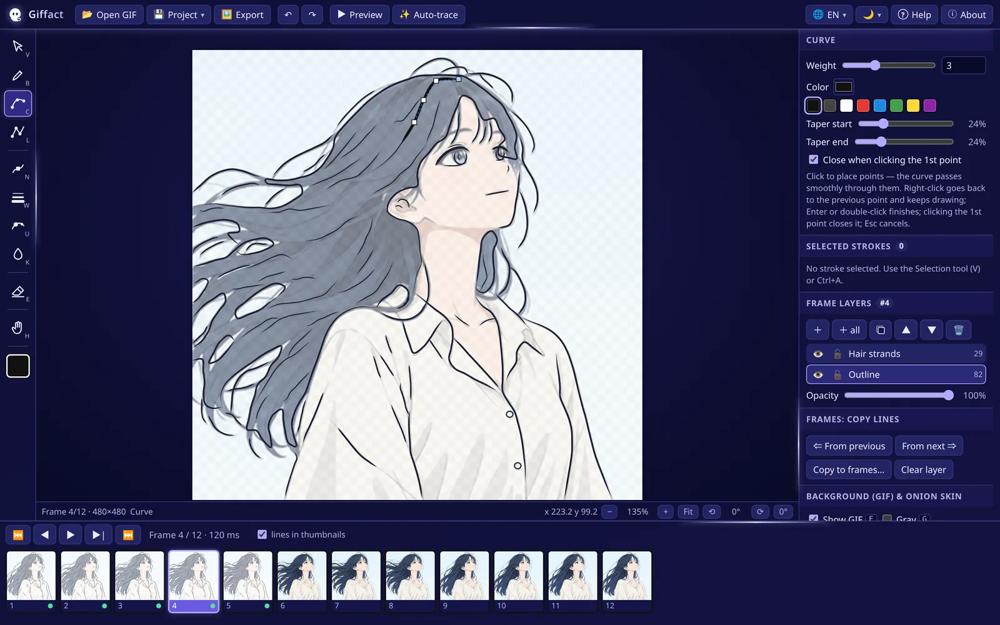
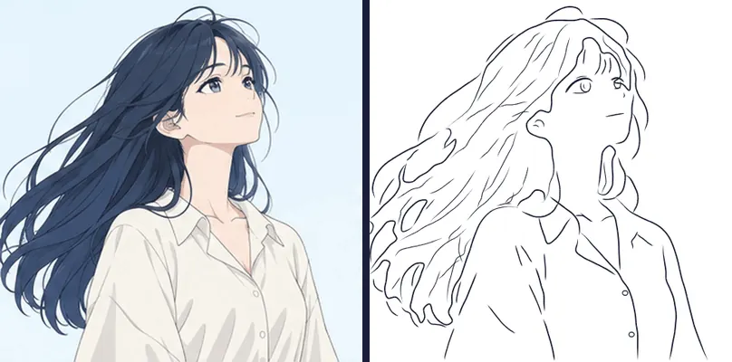
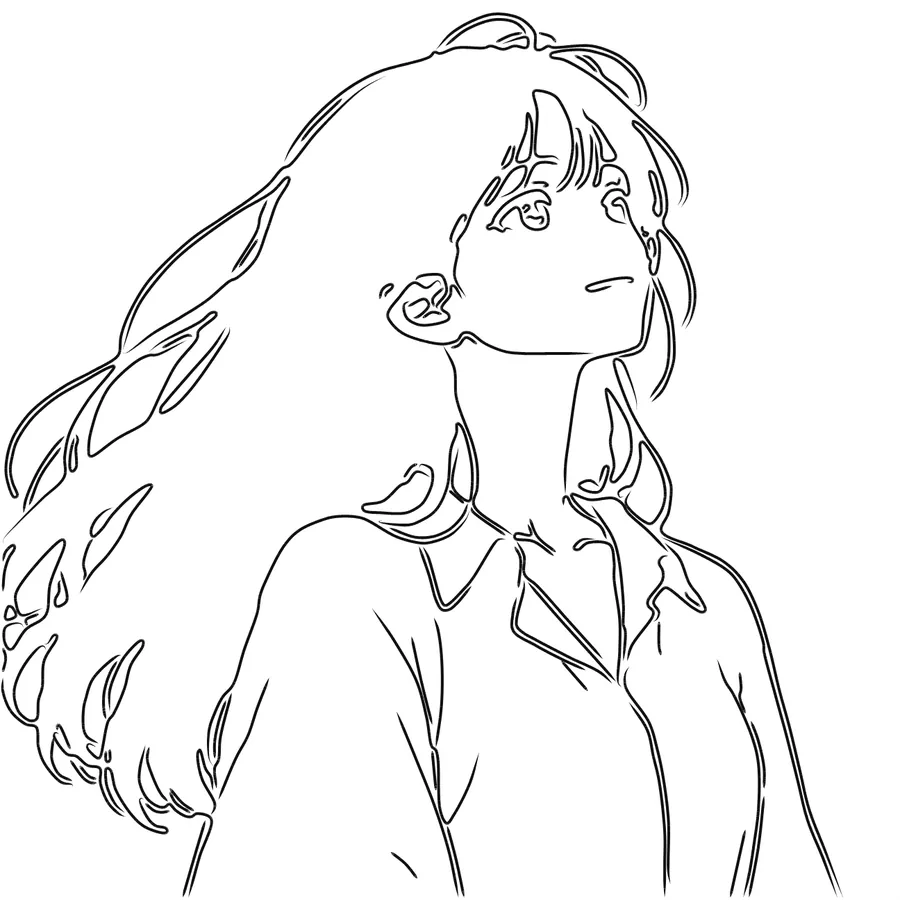

Giffact lets you trace an animated GIF frame by frame with smooth, pressure-sensitive vector strokes, in the spirit of PaintTool SAI, and export only the lines as PNG or SVG at any size. This page takes you from the download to your first exported animation.
Free and open source · Windows and Linux · released October 29, 2026All downloads

01What is Giffact?
Giffact is a rotoscoping tool for line art. You open an animated GIF, draw vector lines over each frame and export only those lines. The result is a clean, transparent line layer for every frame, ready to color, redraw in another program or turn into a new animation.
Every line is a vector curve: you can move its points, change its weight, taper its ends and recolor it at any time, and export at 1×, 2×, 4× or any exact size without losing quality. Everything runs locally: your GIFs and projects never leave your computer.

Left, the original GIF. Right, the linework traced in Giffact and exported frame by frame.
Vector lines, SAI style
Curve, Line and Pen with pressure, stabilizer and tapered ends. Every stroke stays editable.
Layers in every frame
Keep outline, hair and details apart, each layer with visibility, lock and opacity.
Onion skin and copy lines
See the neighbor frames in red and blue, bring the previous lines over and just adjust them.
Export at any size
PNG or SVG, transparent or solid background, only the frames and layers you choose.
Auto-trace
An automatic edge sketch made of editable curves, a head start for busy frames.
10 languages, 2 themes
Dark neon or light theme, with the interface in your language.
02Download and install
Giffact 1.1.1 is available for 64-bit Windows and Linux. Pick the file for your system. All files are on the releases page, along with their SHA-256 checksums.
Unzip it and run Giffact.exe. It starts faster than the portable version.
Windows SmartScreen warning
The executable is not code-signed yet, so Windows may show “Windows protected your PC”. Click More info → Run anyway. This only happens the first time.
Manual install: extract it and run ./giffact inside the folder:
tar xzf Giffact-1.1.1-linux-x64.tar.gz && cd Giffact-1.1.1-linux-x64 && ./giffact
The AppImage won’t open?
AppImages need FUSE 2. Install libfuse2 (on Ubuntu 24.04 and newer the package is called libfuse2t64), or start the file with --appimage-extract-and-run.
Frame layersThe layers of the current frame: add, duplicate, reorder, hide, lock, opacity.
11
Frames: copy linesBring lines from the previous or next frame, or copy them to a range of frames.
12
Background (GIF) & onion skinGIF visibility, gray mode and opacity; onion skin frames, colors and opacity.
13
TimelineEvery frame of the GIF. A dot marks the frames that already have lines.
04Quick start: your first traced animation
Six steps take you from a GIF to a folder of transparent PNGs. The GIF in the screenshots is a 12-frame animation of a girl whose hair blows in the wind.
Open a GIF
Click Open GIF, press Ctrl+O or drag the file into the window. PNG, JPG and WebP open too, as a single frame. All frames appear in the timeline at the bottom.
Every frame starts with a layer called “Lines”. Create more with + (Ctrl+Shift+N). + all creates the layer in every frame at once. A good start is one layer for the outline and another for hair strands. Double-click a layer to rename it.
Press C and click along the shape. The curve flows smoothly through the points, so place them where the line changes direction. Made a mistake? A right-click goes back one point and you keep drawing. Finish with Enter or a double-click.
With Edit points (N), drag points until they fit the drawing. Use Pressure (per point) (U) to taper the ends and Weight (W) for thicker contours. Lower the GIF opacity to see your lines better.
Go to the next frame (→ or D), turn on the onion skin (O) and press Alt+←. The lines of the previous frame are copied to this one, so you only adjust what moved. That is usually much faster than tracing from scratch.
Press Ctrl+E, choose PNG, the frames and the size (2× turns a 480×480 GIF into 960×960) and export. Save the project with Ctrl+S to keep working later.
The result: only the lines, exported at 2× on a white background.
05The tools, one by one
Every tool has a one-key shortcut. The text marked “In the app” is the same tip the app shows in its options panel.
Curve
ShortcutC
In the appClick to place points — the curve passes smoothly through them. Right-click goes back to the previous point and keeps drawing; Enter or double-click finishes; clicking the 1st point closes it; Esc cancels.
Tips
Fewer points make smoother curves. Put them at the extremes of each bend, not every few pixels.
A right-click or Backspace removes the last point without losing the stroke. Esc cancels it.
Click the first point or press Shift+Enter to close a shape (eyes, buttons).
In the appClick point by point for straight segments. Shift locks the angle in 15° steps. Right-click goes back to the previous point; Enter or double-click finishes.
Tips
Ideal for shirt edges, buildings and other straight parts.
Hold Shift to lock the angle in 15° steps.
A Line stroke can still be edited later with Edit points.
In the appDraw freehand. The stabilizer makes the stroke smoother (the stroke “follows” the cursor). When you release, the stroke becomes an editable curve with control points.
Tips
Raise the Stabilizer (Shift+]) for long, calm strokes like hair strands, and lower it for small details.
With a pen tablet, pressure is recorded per point. Minimum pressure sets how thin the lightest touch gets.
When you release, the stroke becomes an editable curve with control points.
Edit points
ShortcutN
In the appDrag a point to move it. Drag on the line to create a new point (or double-click). Ctrl+drag moves the whole stroke. Alt+click deletes a point.
Tips
Turn on Show points of all strokes to see the points of every stroke.
Drag the line itself to insert a new point there.
Ctrl+drag moves the whole stroke. Alt+click deletes a point.
In the appWhole stroke: erases touched strokes. To intersection: erases only the piece between the nearest crossings (quick cleanup of overshoots). Area: erases the part under the brush.
Tips
To intersection is the SAI-style eraser. Hover over a piece of line and the part to be erased turns red; click to cut exactly up to the crossings.
Whole stroke deletes entire strokes. Area works like a normal eraser and splits the strokes it touches.
In the appClick a stroke to select it (Shift/Ctrl adds). Drag on empty space for a box selection. Drag to move; corner handles scale (Shift = free, Alt = from center); the yellow handle rotates (Shift = 15° steps).
Tips
Ctrl+A selects everything in the active layer, and the Selected strokes panel then edits all of them at once.
Corner handles scale and the yellow handle rotates. Ctrl+C / Ctrl+V copy strokes to another frame.
Hand (move view)
ShortcutH
In the appDrag to move the view. Shortcuts: Space+drag moves, mouse wheel zooms, Alt+wheel or R+drag rotates.
Tips
You rarely need it: Space+drag or the middle mouse button pans from any tool.
R+drag rotates the canvas like a sheet of paper and Shift+R straightens it. 0 fits the frame and 1 shows it at 100%.
06Frames, layers and onion skin
Layers
Each frame has its own layer stack. Using the same layers in every frame (+ all) keeps things organized, and copying lines works layer by layer.
+ New layer · + all: New layer in every frame
Duplicate layer · Move up / Move down · Delete layer
👁 Hide / Show · 🔒 Lock: a locked layer can’t be edited, perfect for guide lines.
Opacity: dim a layer to trace over it. Double-click to rename.
Animation changes little from one frame to the next. Instead of tracing again, bring the lines over and adjust them:
⇐ From previous (Alt+←) and From next ⇒ (Alt+→) bring the active layer of the neighbor frame.
Copy to frames… (Ctrl+Shift+V) copies the active layer or the selection to a range of frames, useful for parts that don’t move.
Clear layer empties the active layer of the current frame.
Lines copied from frame 5 onto frame 6: the face already matches, only the hair needs adjusting
Onion skin
With the onion skin on (O) you see the lines of the previous frames in red and of the next ones in blue. Set how many frames, the colors and the opacity in the Background (GIF) & onion skin panel. Hiding the GIF (F) makes it even clearer.
Show GIF (F), Gray (G) and Opacity control how the GIF appears under your lines. Gray and a low opacity make dark lines stand out. None of this changes the export unless you choose to include the GIF.
Click a thumbnail or use ←→ (or AD) to change frames, and Home / End to jump to the ends. With “lines in thumbnails” the thumbnails show your lines too. Press P for the Animated preview: your lines play at the GIF timing or at a custom FPS, with or without the GIF behind them.
Auto-trace detects the edges of the GIF frame and creates editable vector strokes in a new “Auto sketch” layer. It doesn’t replace your hand, but it gives you a quick sketch to start from on busy frames.

BeforeAfter
Drag the slider to compare the frame with the auto-trace result.
The result: only the lines, exported at 2× on a white background.
In the desktop app you choose a folder. In the browser version, the files come in a single .zip.
09Projects (.giffact)
A .giffact file stores everything: the GIF itself (embedded), every layer and stroke of every frame, and the view settings. Copy that single file to another computer and continue exactly where you stopped.
New project (Ctrl+N) · Open project… (Ctrl+Shift+O)
Save project (Ctrl+S) · Save project as… (Ctrl+Shift+S)
Projects from GIF Linework (.gifline / .json), the previous name of Giffact, open too.
In the moon/sun menu, choose Follow system, Dark or Light. The dark theme has subtle neon lavender streaks around the edges (never over the canvas), and you can turn them off with Neon animations. If your system asks for reduced motion, they stay off.
The 🌐 button switches instantly between the 10 languages: English, Português (Brasil), Español, Français, Deutsch, Italiano, 日本語, 中文（简体）, 한국어 and Русский. By default Giffact follows the language of your system.
The complete list, the same one the app shows with F1.
Tools
Action
Key
Selection / transform
V
Pen (freehand)
B
Curve
C
Straight line
L
Edit points
N
Weight
W
Pressure
U
Stroke color
K
Vector eraser
E
Hand
H
Weight − / +
[ ]
Stabilizer − / +
Shift+[ ]
Curve and line
Action
Key
Finish stroke
Enter / double-click
Finish closed
Shift+Enter or click the 1st point
Undo last point
Right-click / Backspace
Cancel stroke
Esc
15° angle steps (line)
Shift
Edit points
Action
Key
Move point
drag point
Insert point
drag the line / double-click
Move whole stroke
Ctrl+drag
Delete point
Alt+click
Frames
Action
Key
Previous / next frame
← → or A D
First / last
Home / End
Copy lines from previous / next
Alt+← / Alt+→
Copy to several frames
Ctrl+Shift+V
Animated preview
P
Play/pause on canvas
Shift+P
View
Action
Key
Show/hide GIF
F
Gray GIF
G
Onion skin
O
Pan view
Space+drag / middle button
Zoom
mouse wheel / + −
Fit to window
0
Zoom 100%
1
Rotate view
R+drag / Alt+wheel
Reset rotation
Shift+R
Editing
Action
Key
Undo / redo (per frame)
Ctrl+Z / Ctrl+Y
Copy / cut / paste
Ctrl+C / X / V
Select all in layer
Ctrl+A
Clear selection
Ctrl+D / Esc
Delete selected
Delete
New layer
Ctrl+Shift+N
File
Action
Key
New project
Ctrl+N
Open GIF
Ctrl+O
Open project
Ctrl+Shift+O
Save project
Ctrl+S
Save as
Ctrl+Shift+S
Export PNG
Ctrl+E
Export SVG
Ctrl+Shift+E
This help
F1 or ?
12Rotoscoping anime: workflow tips
Start with the clearest frame
Trace the frame where the pose reads best first, then spread it forward and backward with copy lines.
Separate what moves
In anime often only part of the drawing moves (here, just the hair). Put the still parts on their own layer and copy them to every frame with Copy to frames…, so you only redraw what changes.
Big shapes first
Silhouette and main contours first, details (eyes, mouth, folds) last. Hide the detail layer while you adjust the big shapes.
Hair: long curves, few points
Use the Curve with points only at the bends of each lock, or the Pen with a high stabilizer. Then taper the tips with Pressure.
A hierarchy of weights
Outer contour thicker (2–3 px), inner lines thinner (1–1.5 px), hair strands the thinnest. Exporting at 2× makes everything look even cleaner.
Check the motion often
Press P every few frames. Lines that jitter show up immediately in the preview.
Turn the GIF down
An opacity of 40–60% and gray mode (G) let you see your lines and the drawing at the same time.
Keep versions
Use Save project as… to keep versions (scene_v1, scene_v2…) before big changes.
13FAQ and troubleshooting
Is Giffact free?
Yes. It is free and open source software (MIT license). If it helps you, consider supporting it on the donation page.
Are my files sent to the internet?
No. Everything runs locally on your computer, and your GIFs and projects are never uploaded.
Windows says “Windows protected your PC”
That is SmartScreen, shown because the executable isn’t signed. Click More info → Run anyway.
The AppImage doesn’t open
Install libfuse2 (libfuse2t64 on Ubuntu 24.04+) or run it with --appimage-extract-and-run. You can also use the .deb or the .tar.gz.
A right-click finished my curve!
Since version 1.1.1, a right-click goes back one point and the curve goes on. To finish, press Enter or double-click. If yours behaves differently, update Giffact.
Can I use a pen tablet?
Yes. Wacom, Huion, XP-Pen, Surface and others work through the system’s pen input, and pressure is recorded per point. Turn off Tablet pressure in the Pen options if you prefer an even line.
Can I open videos (MP4)?
Not directly. Convert the clip to a GIF first (with any converter or ffmpeg). Single images (PNG, JPG, WebP) also open.
My export is huge or fails
Very large sizes (such as 8× of a big GIF) need a lot of memory. Export fewer frames at a time or use a smaller scale; the dialog warns you when the output is very large.
How do I turn the lines back into an animation?
Export PNGs with a transparent background and import them as an image sequence into your animation or video program (Krita, Clip Studio Paint, After Effects, DaVinci Resolve, Blender…).
How do I update?
Download the new version from the releases page. Your .giffact projects keep working. This tutorial is for version 1.1.1.